In section 7.1 we listed some properties of exponential functions without much justification. In this section we will discuss why these properties hold, and investigate the long-run behavior of exponential functions.
SubsectionGraphs of Exponential Functions
The graphs of exponential functions have two characteristic shapes, depending on whether the base, \(b\text{,}\) is greater than \(1\) or less than \(1\text{.}\) As typical examples, consider the graphs of \(f (x) = 2^x\) and \(g(x) =\left(\dfrac{1}{2}\right)^x\) shown in Figure178. Some values for \(f\) and \(g\) are recorded in Tables176 and 177.
\(x\)
\(f(x)\)
\(-3\)
\(\frac{1}{8}\)
\(-2\)
\(\frac{1}{4}\)
\(-1\)
\(\frac{1}{2}\)
\(0\)
\(1\)
\(1\)
\(2\)
\(2\)
\(4\)
\(3\)
\(8\)
\(x\)
\(g(x)\)
\(-3\)
\(8\)
\(-2\)
\(4\)
\(-1\)
\(2\)
\(0\)
\(1\)
\(1\)
\(\frac{1}{2}\)
\(2\)
\(\frac{1}{4}\)
\(3\)
\(\frac{1}{8}\)

Table176Table177Figure178
Notice that \(f (x) = 2^x\) is an increasing function and \(g(x) = \left(\dfrac{1}{2}\right)^x\) is a decreasing function. In general, exponential functions have the following properties.
Properties of Exponential Functions, \(f(x) = ab^x\text{,}\) \(a \gt 0\)
Domain: all real numbers; \((-\infty,\infty)\text{.}\)
Range: all positive numbers; \((0,\infty)\text{.}\)
If \(b \gt 1\text{,}\) the function is increasing and said to have exponential growth;
if \(0 \lt b \lt 1\text{,}\) the function is decreasing and said to have exponential decay.
The \(y\)-intercept is \((0, a)\text{.}\) There is no \(x\)-intercept.
In Table176 you can see that as the \(x\)-values decrease toward negative infinity, the corresponding \(y\)-values decrease toward zero. As a result, the graph of \(f\) decreases toward the \(x\)-axis as we move to the left. Thus, the \(x\)-axis, \(y=0 \text{,}\) is a horizontal asymptote for exponential functions no matter what value \(b\text{,}\) the growth factor, happens to be. We can see this illustrated in Figure178, since the \(y\)-values of each exponential get closer to zero.
For exponential functions with \(0 \lt b \lt 1\text{,}\) this takes place close the positive \(x\)-axis, as illustrated in Figure178b. For exponential functions with \(1 \le b\text{,}\) this takes place close the negative \(x\)-axis, as illustrated in Figure178a.
In Example179, we compare two increasing exponential functions. The larger the value of the base, \(b\text{,}\) the faster the function grows. In this example, both functions have \(a = 1\text{.}\)
Example179
Compare the graphs of \(f (x) = 3^x\) and \(g(x) = 4^x\text{.}\)
We evaluate each function for several convenient values, as shown in Table180.
Plot the points for each function and connect them with smooth curves. For positive \(x\)-values, \(g(x)\) is always larger than \(f (x)\text{,}\) and is increasing more rapidly. In Figure181, \(g(x) = 4^x\) climbs more rapidly than \(f (x) = 3^x\text{.}\) Both graphs cross the \(y\)-axis at (0, 1).
\(x\)
\(f(x)\)
\(g(x)\)
\(-2\)
\(\dfrac{1}{9}\)
\(\dfrac{1}{16}\)
\(-1\)
\(\dfrac{1}{3}\)
\(\dfrac{1}{4}\)
\(0\)
\(1\)
\(1\)
\(1\)
\(3\)
\(4\)
\(2\)
\(9\)
\(16\)
Table180Figure181
For decreasing exponential functions, those with bases between \(0\) and \(1\text{,}\) the smaller the base, the more steeply the graph decreases. For example, compare the graphs of \(p(x) = 0.8^x\) and \(q(x) = 0.5^x\) shown in Figure182.
State the ranges of the functions \(f\) and \(g\) in Figure181 from Example179 on the domain \([-2, 2]\text{.}\)
State the ranges of the functions \(p\) and \(q\) shown in Figure182 on the domain \([-2, 2]\text{.}\) Round your answers to two decimal places.
Not convinced of the Properties of Exponential Functions listed above by just seeing the tables of values and graphs in this section? Try varying the \(a\) and \(b\) parameters in the following applet to see many more examples of graphs of exponential functions, and convince yourself that the properties listed above hold true. Figure184Varying parameters of exponential functions